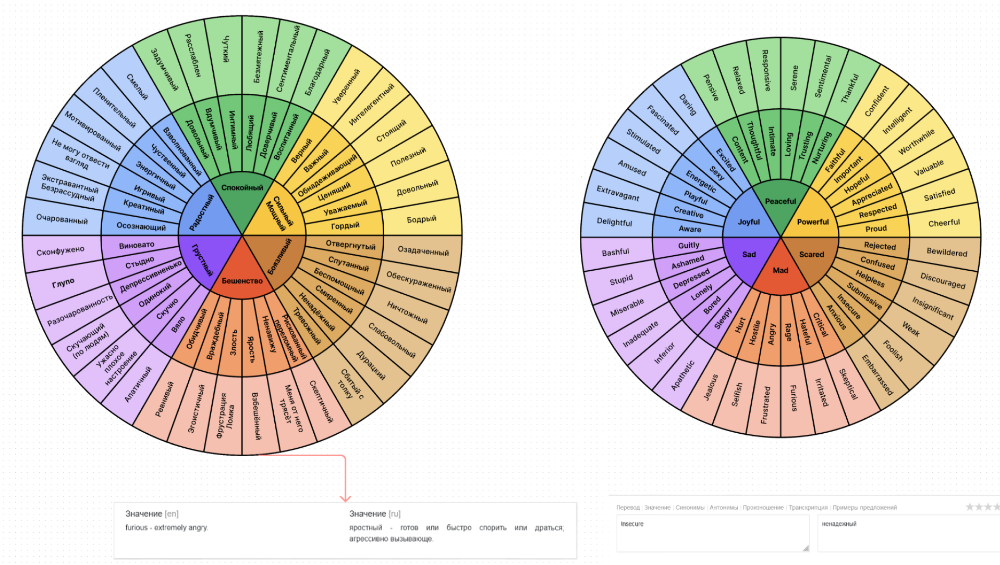

Посвещается всем начинающим разработчикам и творческим людям.
Вынесение выводов из опыта разработки “Супер-проекта”:
1 - Нельзя брать на себя слишком амбициозные планы.
2 - На большие, амбициозные идеи не всегда находятся возможности и силы их осуществить.
3 - Всегда нужно расcчитывать риски, ресурсы времени и собственных возможностей.
Однако никогда не нужно забывать свои амбиции, просто нужно уметь их правильно
перенаправить в нужное русло в правильный момент.
“Большая сила, большая отвественность...”
Управление осуществляется с помощью стрелок и клавиш
WASD. Вы играете за этого неудачливого студента-разработчика по имени Саймон.
https://archeryfox.github.io/Umotion/
Выводы из опыта разработки. Продукт
4
Очень важную роль в разработке сыграл сервис по управлению версиями GitHub,
он помог избежать пооблем со средой разработки
Не знание нужных знаний для разработки, потеря идей, мотивации,
творческий кризис, прокрастинация,
мозг теряет связи между разработкой и личным профитом при достижение цели, из за утраты нужного
дофамина человеку становится трудно концентрироваться на работе, в итоге испытывая негативные
ощущения от работы в средах разработки.
Какие проблемы могут возникнуть
при разработке?
Подбор музыки
Музыка была подобрана для заднего фона а так же могла
переключаться из меню смартфона на паузе.
Разработка основных систем
Сбор графических
референсов
Наполнение деталями.
Отладка
3
За основу была взята вариация колеса Плутчика. Она являлась основной
механикой в повествовании и в геймплее(игровом процессе). На протяжении всей игры игрок должен
осуществлять выбор, определяющий настроение главного героя, а также в боевой системе был упор на
выбор игрока, зависящий от его эмоционального состояния.

Механика эмоций и действий
Сбор референсов.
Разработка
2
Кто знает, что же управляет
поведением человека, его натурой? Скорее всего вы скажите что это зависит от воспитания
конкретной
личности и его окружения, однако это не совсем всегда корректно ибо например, никогда нельзя с
100%
точностью сказать что сделает человек в той или иной ситуации, или что-то точно о нём при
достаточно
длительном общении, а уж тем более по первому знакомству. Но что мы точно знаем, так это то, что
последствиями принимаемых решений служат испытываемые им эмоции. Характер и психологический
портрет
человека определяют эмоции, испытываемые человеком в данный момент. Они служат отношением к
происходящему, а также выражением мировоззрения и прошлого жизненного опыта.
Всего в общем выделяют около 6 эмоций (можно и на 7-8, но мы разделили их на 6 для удобства):
Peaceful - спокойствие, гармония
Joyful - радость
Powerful - могущество, подчинение влиянию
Scare - страх
Mad - безрассудство, безумие
Sad - печаль
Как вы думаете, какой вы человек относительно тех эмоций и действий, в которые вы вкладываете
эти
эмоции?
Что же обозначает U?
U - что же это значит? Этот символ был вдохновлён всемирно известным
видеохостингом YouTube. В английском языке есть сленг, заменяющий местоимение you(ты или вы) на
его
сокращение u.
А также игровой консолью Wii U, которая представляет собой идею совместного игрового процесса со
многими игроками в одном помещении, приоритетно семейному совместному досугу, (we and you) для
we
есть контроллеры, а для человека U есть отдельный контроллер.
Umotion - обозначает твои эмоции, твои действия, твой прогресс. Такие студенты как Саймон или
Ванесса
иногда попадают в ловушку своих эмоций, и это история про каждого из нас в трудные и
одновременно
распущенные студенческие годы.
А название UPage означало то, что после прохождения игры у вас была бы создана такая анкета
персонажа,
каким вы его создали и цветовая схема с различными деталями, которые бы тоже зависели от
конкретных
решений игрока.
Разработка системы персонажей

Саймон - это типичный студент, который страдает недосыпом. Из-за этого герои в
большей мере и видят странные события, которые происходят с ними по сюжету. Вскоре после
прочтения
одной статьи о разделении эмоций, персонаж придумывает систему, в основу которой будет положено
кольцо эмоций и все его действия будут влиять на битвы, происходящие во сне.
А Ванесса является такой же студенткой, но его женской версией. Тоже в
некоторой степени недосыпает, но она будет видеть странные вещи больше из-за своих внутренних
переживаний, нежели неряшливый Саймон.
Все свои заметки занесены на доску с помощью платформы
Figma:
Первые вопросы, которыми задаётся
веб-разработчик/геймдизайнер:
Если это игра, то сюжет и
механики придумываются в первую очередь
Определиться с жанром.
Каким должен быть геймплей?
О чём будет история?
Какие персонажи были бы
уместны в данном сюжете?
О чём должен говорить продукт
пользователю?
Как это будет выглядеть?
Однако это сайт, то он должен выглядеть во-первых привлекательно, а уже во-вторых содержать максимально
информативный, но не захламляющий голову контент
Идея.
Разработка концепта
1
(Не)
Идеальная
история
разработки одного
проекта